Chapter 6: Metabolism¶
Introduction¶
Virtually every task performed by living organisms requires energy. Organisms require energy to perform heavy labor and exercise, but humans also use considerable energy while thinking, and even during sleep. Every organism's living cells constantly use energy. Organisms import nutrients and other molecules. They metabolize (break down) and possibly synthesize into new molecules. If necessary, molecules modify, move around the cell and may distribute themselves to the entire organism. For example, the large proteins that make up muscles are actively built from smaller molecules. Complex carbohydrates break down into simple sugars that the cell uses for energy. Just as energy is required to both build and demolish a building, energy is required to synthesize and break down molecules. Additionally, signaling molecules such as hormones and neurotransmitters transport between cells. Cells ingest and break down bacteria and viruses. Cells must also export waste and toxins to stay healthy, and many cells must swim or move surrounding materials via the beating motion of cellular appendages like cilia and flagella.
The cellular processes that we listed above require a steady supply of energy. From where, and in what form, does this energy come? How do living cells obtain energy, and how do they use it? This chapter will discuss different forms of energy and the physical laws that govern energy transfer. This chapter will also describe how cells use energy and replenish it, and how chemical reactions in the cell perform with great efficiency.
6.1 Energy and Metabolism¶
Learning Objectives
By the end of this section, you will be able to do the following:
- Explain metabolic pathways and describe the two major types
- Discuss how chemical reactions play a role in energy transfer
Scientists use the term bioenergetics to discuss the concept of energy flow (Figure 6.2) through living systems, such as cells. Cellular processes such as building and breaking down complex molecules occur through stepwise chemical reactions. Some of these chemical reactions are spontaneous and release energy; whereas, others require energy to proceed. Just as living things must continually consume food to replenish what they have used, cells must continually obtain more energy to replenish that which the many energy-requiring chemical reactions that constantly take place use. All of the chemical reactions that transpire inside cells, including those that use and release energy, are the cell’s metabolism.
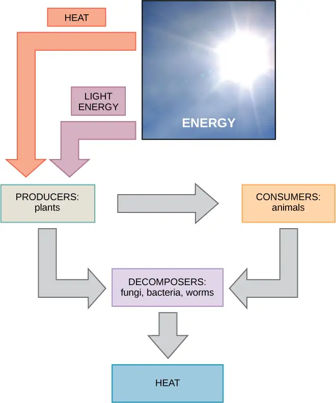
Carbohydrate Metabolism¶
Sugar (a simple carbohydrate) metabolism (chemical reactions) is a classic example of the many cellular processes that use and produce energy. Living things consume sugar as a major energy source, because sugar molecules have considerable energy stored within their bonds. The following equation describes the breakdown of glucose, a simple sugar:
Consumed carbohydrates have their origins in photosynthesizing organisms like plants (Figure 6.3). During photosynthesis, plants use the energy of sunlight to convert carbon dioxide gas (CO2) into sugar molecules, like glucose (C6H12O6). Because this process involves synthesizing a larger, energy-storing molecule, it requires an energy input to proceed. The following equation (notice that it is the reverse of the previous equation) describes the synthesis of glucose:
During photosynthesis chemical reactions, energy is in the form of a very high-energy molecule scientists call ATP, or adenosine triphosphate. This is the primary energy currency of all cells. Just as the dollar is the currency we use to buy goods, cells use ATP molecules as energy currency to perform immediate work. The sugar (glucose) is stored as starch or glycogen. Energy-storing polymers like these break down into glucose to supply ATP molecules.
Solar energy is required to synthesize a glucose molecule during the photosynthesis reactions. In photosynthesis, light energy from the sun initially transforms into chemical energy that temporally stores itself in the energy carrier molecules ATP and NADPH (nicotinamide adenine dinucleotide phosphate). Photosynthesis later uses the stored energy in ATP and NADPH to build one glucose molecule from six molecules of CO2. This process is analogous to eating breakfast in the morning to acquire energy for your body that you can use later in the day. Under ideal conditions, energy from 18 molecules of ATP is required to synthesize one glucose molecule during photosynthesis reactions. Glucose molecules can also combine with and convert into other sugar types. When an organism consumes sugars, glucose molecules eventually make their way into each organism's living cell. Inside the cell, each sugar molecule breaks down through a complex series of chemical reactions. The goal of these reactions is to harvest the energy stored inside the sugar molecules. The harvested energy makes high-energy ATP molecules, which perform work, powering many chemical reactions in the cell. The amount of energy needed to make one glucose molecule from six carbon dioxide molecules is 18 ATP molecules and 12 NADPH molecules (each one of which is energetically equivalent to three ATP molecules), or a total of 54 molecule equivalents required for synthesizing one glucose molecule. This process is a fundamental and efficient way for cells to generate the molecular energy that they require.
Metabolic Pathways¶
The processes of making and breaking down sugar molecules illustrate two types of metabolic pathways. A metabolic pathway is a series of interconnected biochemical reactions that convert a substrate molecule or molecules, step-by-step, through a series of metabolic intermediates, eventually yielding a final product or products. In the case of sugar metabolism, the first metabolic pathway synthesized sugar from smaller molecules, and the other pathway broke sugar down into smaller molecules. Scientists call these two opposite processes—the first requiring energy and the second producing energy—anabolic (building) and catabolic (breaking down) pathways, respectively. Consequently, building (anabolism) and degradation (catabolism) comprise metabolism.
Evolution Connection: Evolution of Metabolic Pathways
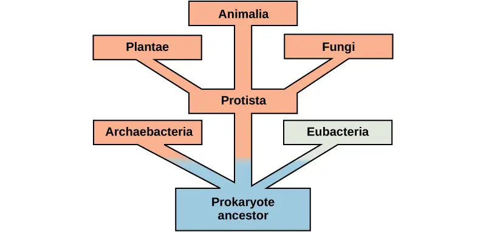
There is more to the complexity of metabolism than understanding the metabolic pathways alone. Metabolic complexity varies from organism to organism. Photosynthesis is the primary pathway in which photosynthetic organisms like plants (planktonic algae perform the majority of global photosynthesis) harvest the sun’s energy and convert it into carbohydrates. The by-product of photosynthesis is oxygen, which some cells require to carry out cellular respiration. During cellular respiration, oxygen aids in the catabolic breakdown of carbon compounds, like carbohydrates. Among the products are CO2 and ATP. In addition, some eukaryotes perform catabolic processes without oxygen (fermentation); that is, they perform or use anaerobic metabolism.
Organisms probably evolved anaerobic metabolism to survive (living organisms came into existence about 3.8 billion years ago, when the atmosphere lacked oxygen). Despite the differences between organisms and the complexity of metabolism, researchers have found that all branches of life share some of the same metabolic pathways, suggesting that all organisms evolved from the same ancient common ancestor (Figure 6.4). Evidence indicates that over time, the pathways diverged, adding specialized enzymes to allow organisms to better adapt to their environment, thus increasing their chance to survive. However, the underlying principle remains that all organisms must harvest energy from their environment and convert it to ATP to carry out cellular functions.
Anabolic and Catabolic Pathways¶
Anabolic pathways require an input of energy to synthesize complex molecules from simpler ones. Synthesizing sugar from CO2 is one example. Other examples are synthesizing large proteins from amino acid building blocks, and synthesizing new DNA strands from nucleic acid building blocks. These biosynthetic processes are critical to the cell's life, take place constantly, and demand energy that ATP and other high-energy molecules like NADH (nicotinamide adenine dinucleotide) and NADPH provide (Figure 6.5).
ATP is an important molecule for cells to have in sufficient supply at all times. The breakdown of sugars illustrates how a single glucose molecule can store enough energy to make a great deal of ATP, 36 to 38 molecules. This is a catabolic pathway. Catabolic pathways involve degrading (or breaking down) complex molecules into simpler ones. Molecular energy stored in the bonds of complex molecules is released in catabolic pathways and harvested in such a way that it can produce ATP. Other energy-storing molecules, such as fats, also break down through similar catabolic reactions to release energy and make ATP (Figure 6.5).
It is important to know that metabolic pathway chemical reactions do not take place spontaneously. A protein called an enzyme facilitates or catalyzes each reaction step. Enzymes are important for catalyzing all types of biological reactions—those that require energy as well as those that release energy.
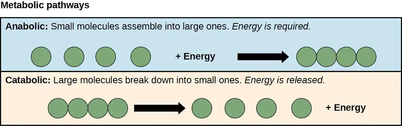
6.2 Potential, Kinetic, Free, and Activation Energy¶
Learning Objectives
By the end of this section, you will be able to do the following:
- Define “energy”
- Explain the difference between kinetic and potential energy
- Discuss the concepts of free energy and activation energy
- Describe endergonic and exergonic reactions
We define energy as the ability to do work. As you’ve learned, energy exists in different forms. For example, electrical energy, light energy, and heat energy are all different energy types. While these are all familiar energy types that one can see or feel, there is another energy type that is much less tangible. Scientists associate this energy with something as simple as an object above the ground. In order to appreciate the way energy flows into and out of biological systems, it is important to understand more about the different energy types that exist in the physical world.
Energy Types¶
When an object is in motion, there is energy. For example, an airplane in flight produces considerable energy. This is because moving objects are capable of enacting a change, or doing work. Think of a wrecking ball. Even a slow-moving wrecking ball can do considerable damage to other objects. However, a wrecking ball that is not in motion is incapable of performing work. Energy with objects in motion is kinetic energy. A speeding bullet, a walking person, rapid molecule movement in the air (which produces heat), and electromagnetic radiation like light all have kinetic energy.
What if we lift that same motionless wrecking ball two stories above a car with a crane? If the suspended wrecking ball is unmoving, can we associate energy with it? The answer is yes. The suspended wrecking ball has associated energy that is fundamentally different from the kinetic energy of objects in motion. This energy form results from the potential for the wrecking ball to do work. If we release the ball it would do work. Because this energy type refers to the potential to do work, we call it potential energy. Objects transfer their energy between kinetic and potential in the following way: As the wrecking ball hangs motionless, it has 0 kinetic and 100 percent potential energy. Once it releases, its kinetic energy begins to increase because it builds speed due to gravity. Simultaneously, as it nears the ground, it loses potential energy. Somewhere mid-fall it has 50 percent kinetic and 50 percent potential energy. Just before it hits the ground, the ball has nearly lost its potential energy and has near-maximal kinetic energy. Other examples of potential energy include water's energy held behind a dam (Figure 6.6), or a person about to skydive from an airplane.
We associate potential energy not only with the matter's location (such as a child sitting on a tree branch), but also with the matter's structure. A spring on the ground has potential energy if it is compressed; so does a tautly pulled rubber band. The very existence of living cells relies heavily on structural potential energy. On a chemical level, the bonds that hold the molecules' atoms together have potential energy. Remember that anabolic cellular pathways require energy to synthesize complex molecules from simpler ones, and catabolic pathways release energy when complex molecules break down. That certain chemical bonds' breakdown can release energy implies that those bonds have potential energy. In fact, there is potential energy stored within the bonds of all the food molecules we eat, which we eventually harness for use. This is because these bonds can release energy when broken. Scientists call the potential energy type that exists within chemical bonds that releases when those bonds break chemical energy (Figure 6.7). Chemical energy is responsible for providing living cells with energy from food. Breaking the molecular bonds within fuel molecules brings about the energy's release.
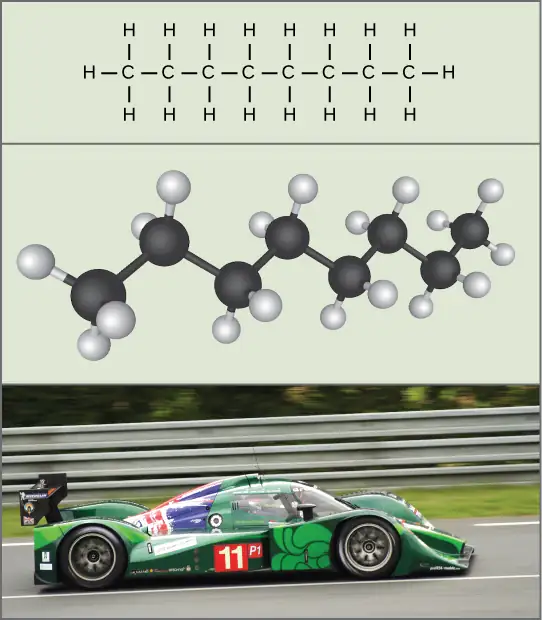
Interactive
Visit this site and select “A simple pendulum” on the menu (under “Harmonic Motion”) to see the shifting kinetic (K) and potential energy (U) of a pendulum in motion.
Free Energy¶
After learning that chemical reactions release energy when energy-storing bonds break, an important next question is how do we quantify and express the chemical reactions with the associated energy? How can we compare the energy that releases from one reaction to that of another reaction? We use a measurement of free energy to quantitate these energy transfers. Scientists call this free energy Gibbs free energy (abbreviated with the letter G) after Josiah Willard Gibbs, the scientist who developed the measurement. According to the second law of thermodynamics, all energy transfers involve losing some energy in an unusable form such as heat, resulting in entropy. Gibbs free energy specifically refers to the energy that takes place with a chemical reaction that is available after we account for entropy. In other words, Gibbs free energy is usable energy, or energy that is available to do work.
Every chemical reaction involves a change in free energy, called delta G (∆G). We can calculate the change in free energy for any system that undergoes such a change, such as a chemical reaction. To calculate ∆G, subtract the amount of energy lost to entropy (denoted as ∆S) from the system's total energy change. The total energy in the system is enthalpy and we denote it as ∆H. The formula for calculating ∆G is as follows, where the symbol T refers to absolute temperature in Kelvin (degrees Celsius + 273):
We express a chemical reaction's standard free energy change as an amount of energy per mole of the reaction product (either in kilojoules or kilocalories, kJ/mol or kcal/mol; 1 kJ = 0.239 kcal) under standard pH, temperature, and pressure conditions. We generally calculate standard pH, temperature, and pressure conditions at pH 7.0 in biological systems, 25 degrees Celsius, and 100 kilopascals (1 atm pressure), respectively. Note that cellular conditions vary considerably from these standard conditions, and so standard calculated ∆G values for biological reactions will be different inside the cell.
Endergonic Reactions and Exergonic Reactions¶
If energy releases during a chemical reaction, then the resulting value from the above equation will be a negative number. In other words, reactions that release energy have a ∆G < 0. A negative ∆G also means that the reaction's products have less free energy than the reactants, because they gave off some free energy during the reaction. Scientists call reactions that have a negative ∆G and consequently release free energy exergonic reactions. Think: exergonic means energy is exiting the system. We also refer to these reactions as spontaneous reactions, because they can occur without adding energy into the system. Understanding which chemical reactions are spontaneous and release free energy is extremely useful for biologists, because these reactions can be harnessed to perform work inside the cell. We must draw an important distinction between the term spontaneous and the idea of a chemical reaction that occurs immediately. Contrary to the everyday use of the term, a spontaneous reaction is not one that suddenly or quickly occurs. Rusting iron is an example of a spontaneous reaction that occurs slowly, little by little, over time.
If a chemical reaction requires an energy input rather than releasing energy, then the ∆G for that reaction will be a positive value. In this case, the products have more free energy than the reactants. Thus, we can think of the reactions' products as energy-storing molecules. We call these chemical reactions endergonic reactions, and they are non-spontaneous. An endergonic reaction will not take place on its own without adding free energy.
Let’s revisit the example of the synthesis and breakdown of the food molecule, glucose. Remember that building complex molecules, such as sugars, from simpler ones is an anabolic process and requires energy. Therefore, the chemical reactions involved in anabolic processes are endergonic reactions. Alternatively the catabolic process of breaking sugar down into simpler molecules releases energy in a series of exergonic reactions. Like the rust example above, the sugar breakdown involves spontaneous reactions, but these reactions do not occur instantaneously. Figure 6.8 shows some other examples of endergonic and exergonic reactions. Later sections will provide more information about what else is required to make even spontaneous reactions happen more efficiently.
Visual Connection
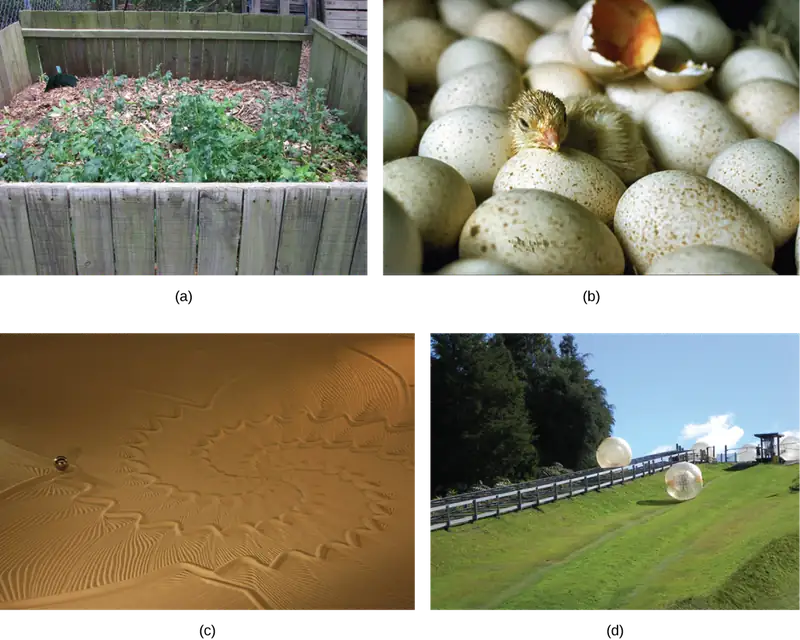
Look at each of the processes, and decide if it is endergonic or exergonic. In each case, does enthalpy increase or decrease, and does entropy increase or decrease?
An important concept in studying metabolism and energy is that of chemical equilibrium. Most chemical reactions are reversible. They can proceed in both directions, releasing energy into their environment in one direction, and absorbing it from the environment in the other direction (Figure 6.9). The same is true for the chemical reactions involved in cell metabolism, such as the breaking down and building up of proteins into and from individual amino acids, respectively. Reactants within a closed system will undergo chemical reactions in both directions until they reach a state of equilibrium, which is one of the lowest possible free energy and a state of maximal entropy. To push the reactants and products away from a state of equilibrium requires energy. Either reactants or products must be added, removed, or changed. If a cell were a closed system, its chemical reactions would reach equilibrium, and it would die because there would be insufficient free energy left to perform the necessary work to maintain life. In a living cell, chemical reactions are constantly moving towards equilibrium, but never reach it. This is because a living cell is an open system. Materials pass in and out, the cell recycles the products of certain chemical reactions into other reactions, and there is never chemical equilibrium. In this way, living organisms are in a constant energy-requiring, uphill battle against equilibrium and entropy. This constant energy supply ultimately comes from sunlight, which produces nutrients in the photosynthesis process.
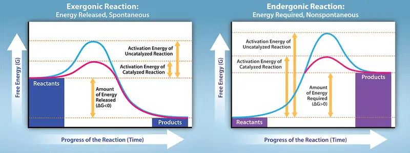
Activation Energy¶
There is another important concept that we must consider regarding endergonic and exergonic reactions. Even exergonic reactions require a small amount of energy input before they can proceed with their energy-releasing steps. These reactions have a net release of energy, but still require some initial energy. Scientists call this small amount of energy input necessary for all chemical reactions to occur the activation energy (or free energy of activation) abbreviated as EA (Figure 6.10).
Why would an energy-releasing, negative ∆G reaction actually require some energy to proceed? The reason lies in the steps that take place during a chemical reaction. During chemical reactions, certain chemical bonds break and new ones form. For example, when a glucose molecule breaks down, bonds between the molecule's carbon atoms break. Since these are energy-storing bonds, they release energy when broken. However, to get them into a state that allows the bonds to break, the molecule must be somewhat contorted. A small energy input is required to achieve this contorted state. This contorted state is the transition state, and it is a high-energy, unstable state. For this reason, reactant molecules do not last long in their transition state, but very quickly proceed to the chemical reaction's next steps. Free energy diagrams illustrate the energy profiles for a given reaction. Whether the reaction is exergonic or endergonic determines whether the products in the diagram will exist at a lower or higher energy state than both the reactants and the products. However, regardless of this measure, the transition state of the reaction exists at a higher energy state than the reactants, and thus, EA is always positive.
Interactive
Watch an animation of the move from free energy to transition state at this site.
From where does the activation energy that chemical reactants require come? The activation energy's required source to push reactions forward is typically heat energy from the surroundings. Heat energy (the total bond energy of reactants or products in a chemical reaction) speeds up the molecule's motion, increasing the frequency and force with which they collide. It also moves atoms and bonds within the molecule slightly, helping them reach their transition state. For this reason, heating a system will cause chemical reactants within that system to react more frequently. Increasing the pressure on a system has the same effect. Once reactants have absorbed enough heat energy from their surroundings to reach the transition state, the reaction will proceed.
The activation energy of a particular reaction determines the rate at which it will proceed. The higher the activation energy, the slower the chemical reaction. The example of iron rusting illustrates an inherently slow reaction. This reaction occurs slowly over time because of its high EA. Additionally, burning many fuels, which is strongly exergonic, will take place at a negligible rate unless sufficient heat from a spark overcomes their activation energy. However, once they begin to burn, the chemical reactions release enough heat to continue the burning process, supplying the activation energy for surrounding fuel molecules. Like these reactions outside of cells, the activation energy for most cellular reactions is too high for heat energy to overcome at efficient rates. In other words, in order for important cellular reactions to occur at appreciable rates (number of reactions per unit time), their activation energies must be lowered (Figure 6.10). Scientist refer to this as catalysis. This is a very good thing as far as living cells are concerned. Important macromolecules, such as proteins, DNA, and RNA, store considerable energy, and their breakdown is exergonic. If cellular temperatures alone provided enough heat energy for these exergonic reactions to overcome their activation barriers, the cell's essential components would disintegrate.
Visual Connection
![This plot shows the activation energy for an exergonic reaction. As the reaction proceeds, energy initially increases to overcome the activation energy. In a catalyzed reaction, the activation energy is much lower. The energy then decreases such that the Gibbs free energy of the products is less than that of the reactants. The activation energy is the peak of the energy plot minus the energy of the reactants. The Gibbs free energy (delta G) is the energy of the products minus the energy of the reactants.](img/figure-06-03-04.webp)
If no activation energy were required to break down sucrose (table sugar), would you be able to store it in a sugar bowl?
6.3 The Laws of Thermodynamics¶
Learning Objectives
By the end of this section, you will be able to do the following:
- Discuss the concept of entropy
- Explain the first and second laws of thermodynamics
Thermodynamics refers to the study of energy and energy transfer involving physical matter. The matter and its environment relevant to a particular case of energy transfer are classified as a system, and everything outside that system is the surroundings. For instance, when heating a pot of water on the stove, the system includes the stove, the pot, and the water. Energy transfers within the system (between the stove, pot, and water). There are two types of systems: open and closed. An open system is one in which energy and matter can transfer between the system and its surroundings. The stovetop system is open because it can lose heat into the air. A closed system is one that can transfer energy but not matter to its surroundings.
Biological organisms are open systems. Energy exchanges between them and their surroundings, as they consume energy-storing molecules and release energy to the environment by doing work. Like all things in the physical world, energy is subject to the laws of physics. The laws of thermodynamics govern the transfer of energy in and among all systems in the universe.
The First Law of Thermodynamics¶
The first law of thermodynamics deals with the total amount of energy in the universe. It states that this total amount of energy is constant. In other words, there has always been, and always will be, exactly the same amount of energy in the universe. Energy exists in many different forms. According to the first law of thermodynamics, energy may transfer from place to place or transform into different forms, but it cannot be created or destroyed. The transfers and transformations of energy take place around us all the time. Light bulbs transform electrical energy into light energy. Gas stoves transform chemical energy from natural gas into heat energy. Plants perform one of the most biologically useful energy transformations on earth: that of converting sunlight energy into the chemical energy stored within organic molecules (Figure 6.2). Figure 6.11 examples of energy transformations.
The challenge for all living organisms is to obtain energy from their surroundings in forms that they can transfer or transform into usable energy to do work. Living cells have evolved to meet this challenge very well. Chemical energy stored within organic molecules such as sugars and fats transforms through a series of cellular chemical reactions into energy within ATP molecules. Energy in ATP molecules is easily accessible to do work. Examples of the types of work that cells need to do include building complex molecules, transporting materials, powering the beating motion of cilia or flagella, contracting muscle fibers to create movement, and reproduction.
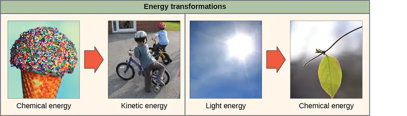
The Second Law of Thermodynamics¶
A living cell’s primary tasks of obtaining, transforming, and using energy to do work may seem simple. However, the second law of thermodynamics explains why these tasks are harder than they appear. None of the energy transfers that we have discussed, along with all energy transfers and transformations in the universe, is completely efficient. In every energy transfer, some amount of energy is lost in a form that is unusable. In most cases, this form is heat energy. Thermodynamically, scientists define heat energy as energy that transfers from one system to another that is not doing work. For example, when an airplane flies through the air, it loses some of its energy as heat energy due to friction with the surrounding air. This friction actually heats the air by temporarily increasing air molecule speed. Likewise, some energy is lost as heat energy during cellular metabolic reactions. This is good for warm-blooded creatures like us, because heat energy helps to maintain our body temperature. Strictly speaking, no energy transfer is completely efficient, because some energy is lost in an unusable form.
An important concept in physical systems is that of order and disorder (or randomness). The more energy that a system loses to its surroundings, the less ordered and more random the system. Scientists refer to the measure of randomness or disorder within a system as entropy. High entropy means high disorder and low energy (Figure 6.12). To better understand entropy, think of a student’s bedroom. If no energy or work were put into it, the room would quickly become messy. It would exist in a very disordered state, one of high entropy. Energy must be put into the system, in the form of the student doing work and putting everything away, in order to bring the room back to a state of cleanliness and order. This state is one of low entropy. Similarly, a car or house must be constantly maintained with work in order to keep it in an ordered state. Left alone, a house's or car's entropy gradually increases through rust and degradation. Molecules and chemical reactions have varying amounts of entropy as well. For example, as chemical reactions reach a state of equilibrium, entropy increases, and as molecules at a high concentration in one place diffuse and spread out, entropy also increases.
Scientific Method Connection
Transfer of Energy and the Resulting Entropy
Set up a simple experiment to understand how energy transfers and how a change in entropy results.
- Take a block of ice. This is water in solid form, so it has a high structural order. This means that the molecules cannot move very much and are in a fixed position. The ice's temperature is 0°C or less. As a result, the system's entropy is low.
- Allow the ice to melt at room temperature. What is the state of molecules in the liquid water now? How did the energy transfer take place? Is the system's entropy higher or lower? Why?
- Heat the water to its boiling point. What happens to the system's entropy when the water is heated?
Think of all physical systems in this way: Living things are highly ordered, requiring constant energy input to maintain themselves in a state of low entropy. As living systems take in energy-storing molecules and transform them through chemical reactions, they lose some amount of usable energy in the process, because no reaction is completely efficient. They also produce waste and by-products that are not useful energy sources. This process increases the entropy of the system’s surroundings. Since all energy transfers result in losing some usable energy, the second law of thermodynamics states that every energy transfer or transformation increases the universe's entropy. Even though living things are highly ordered and maintain a state of low entropy, the universe's entropy in total is constantly increasing due to losing usable energy with each energy transfer that occurs. Essentially, living things are in a continuous uphill battle against this constant increase in universal entropy.
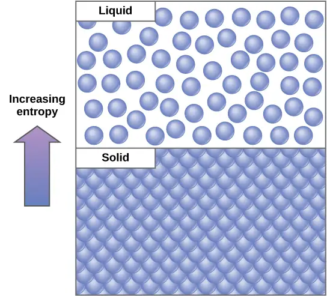
6.4 ATP: Adenosine Triphosphate¶
Learning Objectives
By the end of this section, you will be able to do the following:
- Explain ATP's role as the cellular energy currency
- Describe how energy releases through ATP hydrolysis
Even exergonic, energy-releasing reactions require a small amount of activation energy in order to proceed. However, consider endergonic reactions, which require much more energy input, because their products have more free energy than their reactants. Within the cell, from where does energy to power such reactions come? The answer lies with an energy-supplying molecule scientists call adenosine triphosphate, or ATP. This is a small, relatively simple molecule (Figure 6.13), but within some of its bonds, it contains the potential for a quick burst of energy that can be harnessed to perform cellular work. Think of this molecule as the cells' primary energy currency in much the same way that money is the currency that people exchange for things they need. ATP powers the majority of energy-requiring cellular reactions.
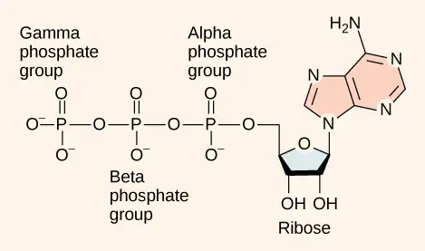
As its name suggests, adenosine triphosphate is comprised of adenosine bound to three phosphate groups (Figure 6.13). Adenosine is a nucleoside consisting of the nitrogenous base adenine and a five-carbon sugar, ribose. The three phosphate groups, in order of closest to furthest from the ribose sugar, are alpha, beta, and gamma. Together, these chemical groups constitute an energy powerhouse. However, not all bonds within this molecule exist in a particularly high-energy state. Both bonds that link the phosphates are equally high-energy bonds (phosphoanhydride bonds) that, when broken, during chemical reactions can release sufficient energy to power a variety of cellular reactions and processes. These high-energy bonds are the bonds between the second and third (or beta and gamma) phosphate groups and between the first and second phosphate groups. These bonds are “high-energy” because the products of hydrolysis—adenosine diphosphate (ADP) and one inorganic phosphate group (Pi)—have considerably lower free energy than the reactants: ATP and a water molecule. In other words, ATP hydrolyzes into ADP in the following reaction:
Like most chemical reactions, ATP to ADP hydrolysis is reversible. The reverse reaction regenerates ATP from ADP + Pi. Cells rely on ATP regeneration just as people rely on regenerating spent money through some sort of income. Since ATP hydrolysis releases energy, ATP regeneration must require an input of free energy. This equation expresses ATP formation:
Two prominent questions remain with regard to using ATP as an energy source. Exactly how much free energy releases with ATP hydrolysis, and how does that free energy do cellular work? The calculated ∆G for the hydrolysis of one ATP mole into ADP and Pi is −7.3 kcal/mole (−30.5 kJ/mol). Since this calculation is true under standard conditions, one would expect a different value exists under cellular conditions. In fact, the ∆G for one ATP mole's hydrolysis in a living cell is almost double the value at standard conditions: –14 kcal/mol (−57 kJ/mol).
ATP is a highly unstable molecule. Unless quickly used to perform work, ATP spontaneously dissociates into ADP + Pi, and the free energy released during this process is lost as heat. The second question we posed above discusses how ATP hydrolysis energy release performs work inside the cell. This depends on a strategy scientists call energy coupling. Cells couple the ATP hydrolysis' exergonic reaction allowing them to proceed. One example of energy coupling using ATP involves a transmembrane ion pump that is extremely important for cellular function. This sodium-potassium pump (Na+/K+ pump) drives sodium out of the cell and potassium into the cell (Figure 6.14). A large percentage of a cell’s ATP powers this pump, because cellular processes bring a considerable amount of sodium into the cell and potassium out of it. The pump works constantly to stabilize cellular concentrations of sodium and potassium. In order for the pump to turn one cycle (exporting three Na+ ions and importing two K+ ions), one ATP molecule must hydrolyze. When ATP hydrolyzes, its gamma phosphate does not simply float away, but it actually transfers onto the pump protein. Scientists call this process of a phosphate group binding to a molecule phosphorylation. As with most ATP hydrolysis cases, a phosphate from ATP transfers onto another molecule. In a phosphorylated state, the Na+/K+ pump has more free energy and is triggered to undergo a conformational change. This change allows it to release Na+ to the cell's outside. It then binds extracellular K+, which, through another conformational change, causes the phosphate to detach from the pump. This phosphate release triggers the K+ to release to the cell's inside. Essentially, the energy released from the ATP hydrolysis couples with the energy required to power the pump and transport Na+ and K+ ions. Once again, the ATP hydrolysis releases energy used for phosphorylation of another molecule, creating an unstable intermediate that powers the conformational change. In this way, ATP performs cellular work using this basic form of energy coupling through phosphorylation.
Visual Connection
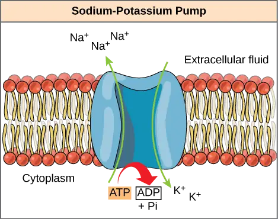
One ATP molecule's hydrolysis releases 7.3 kcal/mol of energy (∆G = −7.3 kcal/mol of energy). If it takes 2.1 kcal/mol of energy to move one Na+ across the membrane (∆G = +2.1 kcal/mol of energy), how many sodium ions could one ATP molecule's hydrolysis move?
Often during cellular metabolic reactions, such as nutrient synthesis and breakdown, certain molecules must alter slightly in their conformation to become substrates for the next step in the reaction series. One example is during the very first steps of cellular respiration, when a sugar glucose molecule breaks down in the process of glycolysis. In the first step, ATP is required to phosphorylate glucose, creating a high-energy but unstable intermediate. This phosphorylation reaction powers a conformational change that allows the phosphorylated glucose molecule to convert to the phosphorylated sugar fructose. Fructose is a necessary intermediate for glycolysis to move forward. Here, ATP hydrolysis' exergonic reaction couples with the endergonic reaction of converting glucose into a phosphorylated intermediate in the pathway. Once again, the energy released by breaking a phosphate bond within ATP was used for phosphorylyzing another molecule, creating an unstable intermediate and powering an important conformational change.
Interactive
See an animation of the ATP-producing glycolysis process at this site.
6.5 Enzymes¶
Learning Objectives
By the end of this section, you will be able to do the following:
- Describe the role of enzymes in metabolic pathways
- Explain how enzymes function as molecular catalysts
- Discuss enzyme regulation by various factors
A substance that helps a chemical reaction to occur is a catalyst, and the special molecules that catalyze biochemical reactions are enzymes. Almost all enzymes are proteins, comprised of amino acid chains, and they perform the critical task of lowering the activation energies of chemical reactions inside the cell. Enzymes do this by binding to the reactant molecules, and holding them in such a way as to make the chemical bond-breaking and bond-forming processes take place more readily. It is important to remember that enzymes do not change the reaction's ∆G. In other words, they do not change whether a reaction is exergonic (spontaneous) or endergonic. This is because they do not change the reactants' or products' free energy. They only reduce the activation energy required to reach the transition state (Figure 6.15).
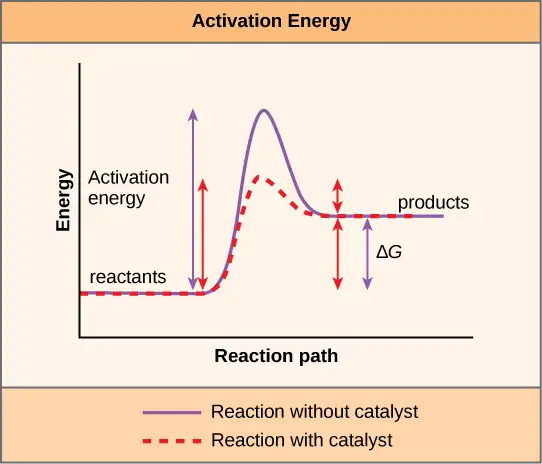
Enzyme Active Site and Substrate Specificity¶
The chemical reactants to which an enzyme binds are the enzyme’s substrates. There may be one or more substrates, depending on the particular chemical reaction. In some reactions, a single-reactant substrate breaks down into multiple products. In others, two substrates may come together to create one larger molecule. Two reactants might also enter a reaction, both become modified, and leave the reaction as two products. The location within the enzyme where the substrate binds is the enzyme’s active site. This is where the “action” happens. Since enzymes are proteins, there is a unique combination of amino acid residues (also side chains, or R groups) within the active site. Different properties characterize each residue. These can be large or small, weakly acidic or basic, hydrophilic or hydrophobic, positively or negatively charged, or neutral. The unique combination of amino acid residues, their positions, sequences, structures, and properties, creates a very specific chemical environment within the active site. This specific environment is suited to bind, albeit briefly, to a specific chemical substrate (or substrates). Due to this jigsaw puzzle-like match between an enzyme and its substrates (which adapts to find the best fit between the transition state and the active site), enzymes are known for their specificity. The “best fit” results from the shape and the amino acid functional group’s attraction to the substrate. There is a specifically matched enzyme for each substrate and, thus, for each chemical reaction; however, there is flexibility as well.
The fact that active sites are so perfectly suited to provide specific environmental conditions also means that they are subject to local environmental influences. It is true that increasing the environmental temperature generally increases reaction rates, enzyme-catalyzed or otherwise. However, increasing or decreasing the temperature outside of an optimal range can affect chemical bonds within the active site in such a way that they are less well suited to bind substrates. High temperatures will eventually cause enzymes, like other biological molecules, to denature, a process that changes the substance's natural properties. Likewise, the local environment's pH can also affect enzyme function. Active site amino acid residues have their own acidic or basic properties that are optimal for catalysis. These residues are sensitive to changes in pH that can impair the way substrate molecules bind. Enzymes are suited to function best within a certain pH range, and, as with temperature, extreme environmental pH values (acidic or basic) can cause enzymes to denature.
Induced Fit and Enzyme Function¶
For many years, scientists thought that enzyme-substrate binding took place in a simple “lock-and-key” fashion. This model asserted that the enzyme and substrate fit together perfectly in one instantaneous step. However, current research supports a more refined view scientists call induced fit (Figure 6.16). This model expands upon the lock-and-key model by describing a more dynamic interaction between enzyme and substrate. As the enzyme and substrate come together, their interaction causes a mild shift in the enzyme’s structure that confirms an ideal binding arrangement between the enzyme and the substrate's transition state. This ideal binding maximizes the enzyme’s ability to catalyze its reaction.
Interactive
View an induced fit animation at this website.
When an enzyme binds its substrate, it forms an enzyme-substrate complex. This complex lowers the reaction's activation energy and promotes its rapid progression in one of many ways. On a basic level, enzymes promote chemical reactions that involve more than one substrate by bringing the substrates together in an optimal orientation. The appropriate region (atoms and bonds) of one molecule is juxtaposed to the other molecule's appropriate region with which it must react. Another way in which enzymes promote substrate reaction is by creating an optimal environment within the active site for the reaction to occur. Certain chemical reactions might proceed best in a slightly acidic or non-polar environment. The chemical properties that emerge from the particular arrangement of amino acid residues within an active site create the perfect environment for an enzyme’s specific substrates to react.
You have learned that the activation energy required for many reactions includes the energy involved in manipulating or slightly contorting chemical bonds so that they can easily break and allow others to reform. Enzymatic action can aid this process. The enzyme-substrate complex can lower the activation energy by contorting substrate molecules in such a way as to facilitate bond-breaking, helping to reach the transition state. Finally, enzymes can also lower activation energies by taking part in the chemical reaction itself. The amino acid residues can provide certain ions or chemical groups that actually form covalent bonds with substrate molecules as a necessary step of the reaction process. In these cases, it is important to remember that the enzyme will always return to its original state at the reaction's completion. One of enzymes' hallmark properties is that they remain ultimately unchanged by the reactions they catalyze. After an enzyme catalyzes a reaction, it releases its product(s).
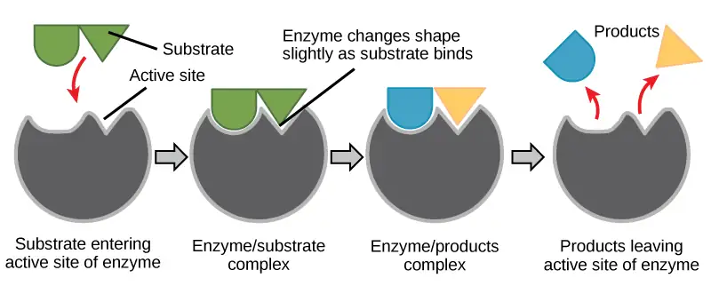
Metabolism Control Through Enzyme Regulation¶
It would seem ideal to have a scenario in which all the encoded enzymes in an organism’s genome existed in abundant supply and functioned optimally under all cellular conditions, in all cells, at all times. In reality, this is far from the case. A variety of mechanisms ensure that this does not happen. Cellular needs and conditions vary from cell to cell, and change within individual cells over time. The required enzymes and energetic demands of stomach cells are different from those of fat storage cells, skin cells, blood cells, and nerve cells. Furthermore, a digestive cell works much harder to process and break down nutrients during the time that closely follows a meal compared with many hours after a meal. As these cellular demands and conditions vary, so do the amounts and functionality of different enzymes.
Since the rates of biochemical reactions are controlled by activation energy, and enzymes lower and determine activation energies for chemical reactions, the relative amounts and functioning of the variety of enzymes within a cell ultimately determine which reactions will proceed and at which rates. This determination is tightly controlled. In certain cellular environments, environmental factors like pH and temperature partly control enzyme activity. There are other mechanisms through which cells control enzyme activity and determine the rates at which various biochemical reactions will occur.
Molecular Regulation of Enzymes¶
Enzymes can be regulated in ways that either promote or reduce their activity. There are many different kinds of molecules that inhibit or promote enzyme function, and various mechanisms exist for doing so. For example, in some cases of enzyme inhibition, an inhibitor molecule is similar enough to a substrate that it can bind to the active site and simply block the substrate from binding. When this happens, the enzyme is inhibited through competitive inhibition, because an inhibitor molecule competes with the substrate for active site binding (Figure 6.17). On the other hand, in noncompetitive inhibition, an inhibitor molecule binds to the enzyme in a location other than the active site, called an allosteric site, but still manages to prevent substrate binding to the active site. Some inhibitor molecules bind to enzymes in a location where their binding induces a conformational change that reduces the enzyme activity as it no longer effectively catalyzes the conversion of the substrate to product.
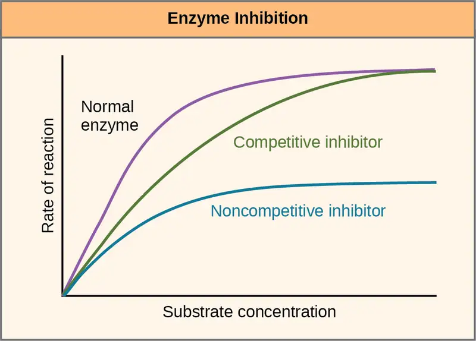
Some inhibitor molecules bind to enzymes in a location where their binding induces a conformational change that reduces the enzyme's affinity for its substrate. This type of inhibition is an allosteric inhibition (Figure 6.18). More than one polypeptide comprise most allosterically regulated enzymes, meaning that they have more than one protein subunit. When an allosteric inhibitor binds to an enzyme, all active sites on the protein subunits change slightly such that they bind their substrates with less efficiency. There are allosteric activators as well as inhibitors. Allosteric activators bind to locations on an enzyme away from the active site, inducing a conformational change that increases the affinity of the enzyme’s active site(s) for its substrate(s).
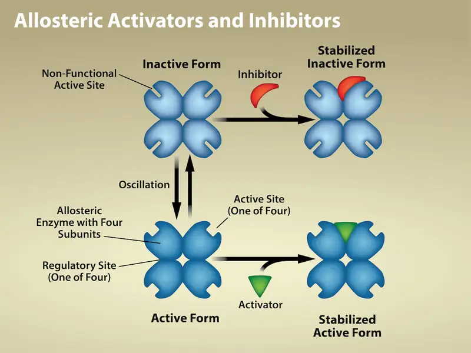
Everyday Connection: Drug Discovery by Looking for Inhibitors of Key Enzymes in Specific Pathways
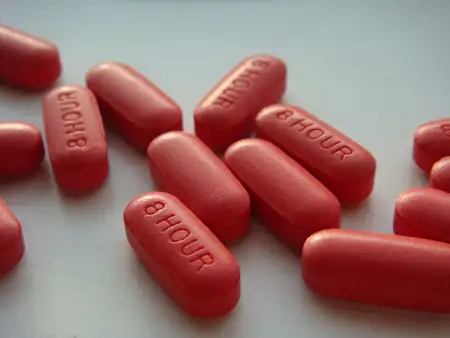
Enzymes are key components of metabolic pathways. Understanding how enzymes work and how they can be regulated is a key principle behind developing many pharmaceutical drugs (Figure 6.19) on the market today. Biologists working in this field collaborate with other scientists, usually chemists, to design drugs.
Consider statins for example—which is a class of drugs that reduces cholesterol levels. These compounds are essentially inhibitors of the enzyme HMG-CoA reductase. HMG-CoA reductase is the enzyme that synthesizes cholesterol from lipids in the body. By inhibiting this enzyme, the drug reduces cholesterol levels synthesized in the body. Similarly, acetaminophen, popularly marketed under the brand name Tylenol, is an inhibitor of the enzyme cyclooxygenase. While it is effective in providing relief from fever and inflammation (pain), scientists still do not completely understand its mechanism of action.
How are drugs developed? One of the first challenges in drug development is identifying the specific molecule that the drug is intended to target. In the case of statins, HMG-CoA reductase is the drug target. Researchers identify targets through painstaking research in the laboratory. Identifying the target alone is not sufficient. Scientists also need to know how the target acts inside the cell and which reactions go awry in the case of disease. Once researchers identify the target and the pathway, then the actual drug design process begins. During this stage, chemists and biologists work together to design and synthesize molecules that can either block or activate a particular reaction. However, this is only the beginning: both if and when a drug prototype is successful in performing its function, then it must undergo many tests from in vitro experiments to clinical trials before it can obtain FDA approval to be on the market.
Many enzymes don’t work optimally, or even at all, unless bound to other specific non-protein helper molecules, either temporarily through ionic or hydrogen bonds or permanently through stronger covalent bonds. Two types of helper molecules are cofactors and coenzymes. Binding to these molecules promotes optimal conformation and function for their respective enzymes. Cofactors are inorganic ions such as iron (Fe++) and magnesium (Mg++). One example of an enzyme that requires a metal ion as a cofactor is the enzyme that builds DNA molecules, DNA polymerase, which requires a bound zinc ion (Zn++) to function. Coenzymes are organic helper molecules, with a basic atomic structure comprised of carbon and hydrogen, which are required for enzyme action. The most common sources of coenzymes are dietary vitamins (Figure 6.20). Some vitamins are precursors to coenzymes and others act directly as coenzymes. Vitamin C is a coenzyme for multiple enzymes that take part in building the important connective tissue component, collagen. An important step in breaking down glucose to yield energy is catalysis by a multi-enzyme complex scientists call pyruvate dehydrogenase. Pyruvate dehydrogenase is a complex of several enzymes that actually requires one cofactor (a magnesium ion) and five different organic coenzymes to catalyze its specific chemical reaction. Therefore, enzyme function is, in part, regulated by an abundance of various cofactors and coenzymes, which the diets of most organisms supply.
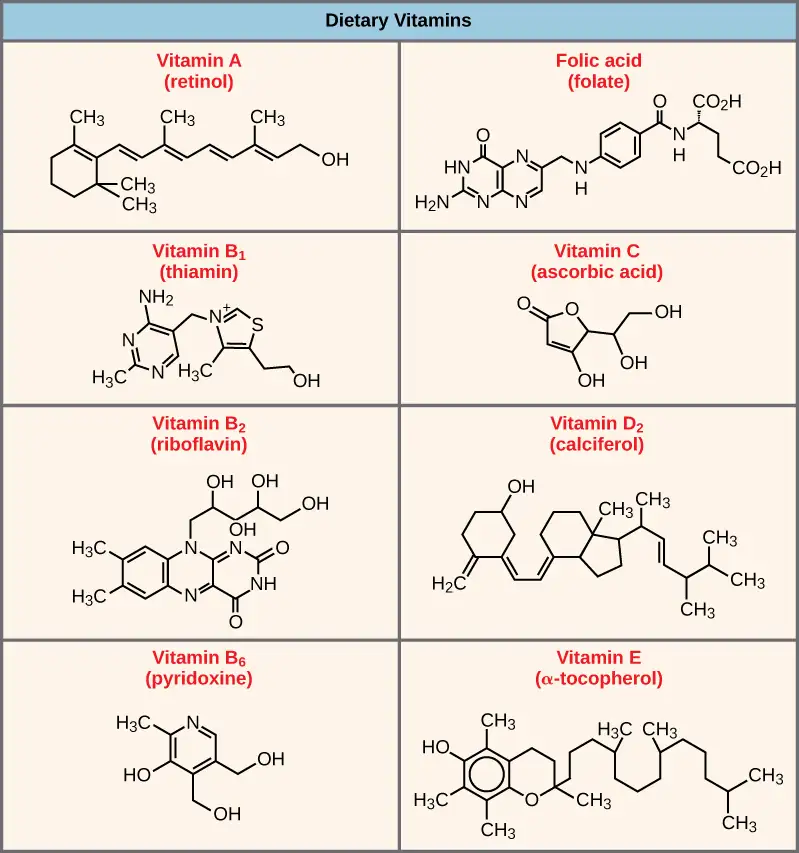
Enzyme Compartmentalization¶
In eukaryotic cells, molecules such as enzymes are usually compartmentalized into different organelles. This allows for yet another level of regulation of enzyme activity. Enzymes required only for certain cellular processes are sometimes housed separately along with their substrates, allowing for more efficient chemical reactions. Examples of this sort of enzyme regulation based on location and proximity include the enzymes involved in the latter stages of cellular respiration, which take place exclusively in the mitochondria, and the enzymes involved in digesting cellular debris and foreign materials, located within lysosomes.
Feedback Inhibition in Metabolic Pathways¶
Molecules can regulate enzyme function in many ways. However, a major question remains: What are these molecules and from where do they come? Some are cofactors and coenzymes, ions, and organic molecules, as you have learned. What other molecules in the cell provide enzymatic regulation, such as allosteric modulation, and competitive and noncompetitive inhibition? The answer is that a wide variety of molecules can perform these roles. Some include pharmaceutical and non-pharmaceutical drugs, toxins, and poisons from the environment. Perhaps the most relevant sources of enzyme regulatory molecules, with respect to cellular metabolism, are cellular metabolic reaction products themselves. In a most efficient and elegant way, cells have evolved to use their own reactions' products for feedback inhibition of enzyme activity. Feedback inhibition involves using a reaction product to regulate its own further production (Figure 6.21). The cell responds to the abundance of specific products by slowing down production during anabolic or catabolic reactions. Such reaction products may inhibit the enzymes that catalyzed their production through the mechanisms that we described above.
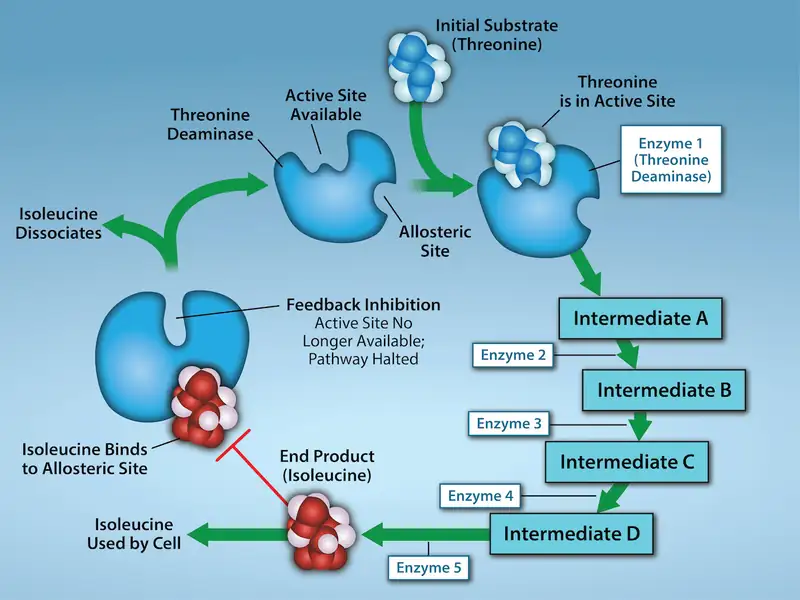
Producing both amino acids and nucleotides is controlled through feedback inhibition. Additionally, ATP is an allosteric regulator of some of the enzymes involved in sugar's catabolic breakdown, the process that produces ATP. In this way, when ATP is abundant, the cell can prevent its further production. Remember that ATP is an unstable molecule that can spontaneously dissociate into ADP and inorganic phosphate. If too much ATP were present in a cell, much of it would go to waste. Alternatively, ADP serves as a positive allosteric regulator (an allosteric activator) for some of the same enzymes that ATP inhibits. Thus, when relative ADP levels are high compared to ATP, the cell is triggered to produce more ATP through sugar catabolism.
Chapter Review¶
Key Terms¶
- activation energy
- energy necessary for reactions to occur
- active site
- enzyme's specific region to which the substrate binds
- allosteric inhibition
- inhibition by a binding event at a site different from the active site, which induces a conformational change and reduces the enzyme's affinity for its substrate
- anabolic
- (also, anabolism) pathways that require an energy input to synthesize complex molecules from simpler ones
- ATP
- adenosine triphosphate, the cell’s energy currency
- bioenergetics
- study of energy flowing through living systems
- catabolic
- (also, catabolism) pathways in which complex molecules break down into simpler ones
- chemical energy
- potential energy in chemical bonds that releases when those bonds are broken
- coenzyme
- small organic molecule, such as a vitamin or its derivative, which is required to enhance an enzyme's activity
- cofactor
- inorganic ion, such as iron and magnesium ions, required for optimal enzyme activity regulation
- competitive inhibition
- type of inhibition in which the inhibitor competes with the substrate molecule by binding to the enzyme's active site
- denature
- process that changes a substance's natural properties
- endergonic
- describes chemical reactions that require energy input
- energy coupling
- process during which energy released by one reaction is used to drive another reaction
- enthalpy
- a system's total energy
- entropy (S)
- measure of randomness or disorder within a system
- exergonic
- describes chemical reactions that release free energy
- feedback inhibition
- a product's effect of a reaction sequence to decrease its further production by inhibiting the first enzyme's activity in the pathway that produces it
- free energy
- Gibbs free energy is the usable energy, or energy that is available to do work
- heat
- energy transferred from one system to another that is not work (energy of the molecules' motion or particles)
- heat energy
- total bond energy of reactants or products in a chemical reaction
- induced fit
- dynamic fit between the enzyme and its substrate, in which both components modify their structures to allow for ideal binding
- kinetic energy
- energy type that takes place with objects or particles in motion
- metabolism
- all the chemical reactions that take place inside cells, including anabolism and catabolism
- phosphoanhydride bond
- bond that connects phosphates in an ATP molecule
- potential energy
- energy type that has the potential to do work; stored energy
- substrate
- molecule on which the enzyme acts
- thermodynamics
- study of energy and energy transfer involving physical matter
- transition state
- high-energy, unstable state (an intermediate form between the substrate and the product) occurring during a chemical reaction
Summary¶
6.1 Energy and Metabolism¶
Cells perform the functions of life through various chemical reactions. A cell’s metabolism refers to the chemical reactions that take place within it. There are metabolic reactions that involve breaking down complex chemicals into simpler ones, such as breaking down large macromolecules. Scientists refer to this process as catabolism, and we associate such reactions an energy release. On the other end of the spectrum, anabolism refers to metabolic processes that build complex molecules out of simpler ones, such as macromolecule synthesis. Anabolic processes require energy. Glucose synthesis and glucose breakdown are examples of anabolic and catabolic pathways, respectively.
6.2 Potential, Kinetic, Free, and Activation Energy¶
Energy comes in many different forms. Objects in motion do physical work, and kinetic energy is the energy of objects in motion. Objects that are not in motion may have the potential to do work, and thus, have potential energy. Molecules also have potential energy because breaking molecular bonds has the potential to release energy. Living cells depend on harvesting potential energy from molecular bonds to perform work. Free energy is a measure of energy that is available to do work. A system's free energy changes during energy transfers such as chemical reactions, and scientists refer to this change as ∆G.
A reaction's ∆G can be negative or positive, meaning that the reaction releases energy or consumes energy, respectively. A reaction with a negative ∆G that gives off energy is an exergonic reaction. One with a positive ∆G that requires energy input is an endergonic reaction. Exergonic reactions are spontaneous because their products have less energy than their reactants. Endergonic reactions' products have a higher energy state than the reactants, and so these are nonspontaneous reactions. However, all reactions (including spontaneous -∆G reactions) require an initial energy input in order to reach the transition state, at which they will proceed. This initial input of energy is the activation energy.
6.3 The Laws of Thermodynamics¶
In studying energy, scientists use the term “system” to refer to the matter and its environment involved in energy transfers. Everything outside of the system is the surroundings. Single cells are biological systems. We can think of systems as having a certain amount of order. It takes energy to make a system more ordered. The more ordered a system, the lower its entropy. Entropy is a measure of a system's disorder. As a system becomes more disordered, the lower its energy and the higher its entropy.
The laws of thermodynamics are a series of laws that describe the properties and processes of energy transfer. The first law states that the total amount of energy in the universe is constant. This means that energy cannot be created or destroyed, only transferred or transformed. The second law of thermodynamics states that every energy transfer involves some loss of energy in an unusable form, such as heat energy, resulting in a more disordered system. In other words, no energy transfer is completely efficient, and all transfers trend toward disorder.
6.4 ATP: Adenosine Triphosphate¶
ATP is the primary energy-supplying molecule for living cells. ATP is comprised of a nucleotide, a five-carbon sugar, and three phosphate groups. The bonds that connect the phosphates (phosphoanhydride bonds) have high-energy content. The energy released from ATP hydrolysis into ADP + Pi performs cellular work. Cells use ATP to perform work by coupling ATP hydrolysis' exergonic reaction with endergonic reactions. ATP donates its phosphate group to another molecule via phosphorylation. The phosphorylated molecule is at a higher-energy state and is less stable than its unphosphorylated form, and this added energy from phosphate allows the molecule to undergo its endergonic reaction.
6.5 Enzymes¶
Enzymes are chemical catalysts that accelerate chemical reactions at physiological temperatures by lowering their activation energy. Enzymes are usually proteins consisting of one or more polypeptide chains. Enzymes have an active site that provides a unique chemical environment, comprised of certain amino acid R groups (residues). This unique environment is perfectly suited to convert particular chemical reactants for that enzyme, scientists call substrates, into unstable intermediates that they call transition states. Enzymes and substrates bind with an induced fit, which means that enzymes undergo slight conformational adjustments upon substrate contact, leading to full, optimal binding. Enzymes bind to substrates and catalyze reactions in four different ways: bringing substrates together in an optimal orientation, compromising the bond structures of substrates so that bonds can break down more easily, providing optimal environmental conditions for a reaction to occur, or participating directly in their chemical reaction by forming transient covalent bonds with the substrates.
Enzyme action must be regulated so that in a given cell at a given time, the desired reactions catalyze and the undesired reactions are not. Enzymes are regulated by cellular conditions, such as temperature and pH. They are also regulated through their location within a cell, sometimes compartmentalized so that they can only catalyze reactions under certain circumstances. Enzyme inhibition and activation via other molecules are other important ways that enzymes are regulated. Inhibitors can act competitively, noncompetitively, or allosterically. Noncompetitive inhibitors are usually allosteric. Activators can also enhance enzyme function allosterically. The most common method by which cells regulate the enzymes in metabolic pathways is through feedback inhibition. During feedback inhibition, metabolic pathway products serve as inhibitors (usually allosteric) of one or more of the enzymes (usually the first committed enzyme of the pathway) involved in the pathway that produces them.
Multiple Choice¶
6.1 Energy and Metabolism¶
1. Energy is stored long-term in the bonds of _____ and used short-term to perform work from a(n) _____ molecule.
- ATP : glucose
- an anabolic molecule : catabolic molecule
- glucose : ATP
- a catabolic molecule : anabolic molecule
Answer
C
2. DNA replication involves unwinding two strands of parent DNA, copying each strand to synthesize complementary strands, and releasing the parent and daughter DNA. Which of the following accurately describes this process?
- This is an anabolic process.
- This is a catabolic process.
- This is both anabolic and catabolic.
- This is a metabolic process but is neither anabolic nor catabolic.
Answer
A
6.2 Potential, Kinetic, Free, and Activation Energy¶
3. Consider a pendulum swinging. Which type(s) of energy is/are associated with the pendulum in the following instances: i. the moment at which it completes one cycle, just before it begins to fall back towards the other end, ii. the moment that it is in the middle between the two ends, and iii. just before it reaches the end of one cycle (just before instant i.).
- i. potential and kinetic, ii. potential and kinetic, iii. kinetic
- i. potential, ii. potential and kinetic, iii. potential and kinetic
- i. potential, ii. kinetic, iii. potential and kinetic
- i. potential and kinetic, ii. kinetic iii. kinetic
Answer
C
4. Which of the following comparisons or contrasts between endergonic and exergonic reactions is false?
- Endergonic reactions have a positive ∆G and exergonic reactions have a negative ∆G.
- Endergonic reactions consume energy and exergonic reactions release energy.
- Both endergonic and exergonic reactions require a small amount of energy to overcome an activation barrier.
- Endergonic reactions take place slowly and exergonic reactions take place quickly.
Answer
D
5. Which of the following is the best way to judge the relative activation energies between two given chemical reactions?
- Compare the ∆G values between the two reactions.
- Compare their reaction rates.
- Compare their ideal environmental conditions.
- Compare the spontaneity between the two reactions.
Answer
B
6.3 The Laws of Thermodynamics¶
6. Which of the following is not an example of an energy transformation?
- turning on a light switch
- solar panels at work
- formation of static electricity
- none of the above
Answer
A
7. In each of the three systems, determine the state of entropy (low or high) when comparing the first and second: i. the instant that a perfume bottle is sprayed compared with 30 seconds later, ii. an old 1950s car compared with a brand new car, and iii. a living cell compared with a dead cell.
- i. low, ii. high, iii. low
- i. low, ii. high, iii. high
- i. high, ii. low, iii. high
- i. high, ii. low, iii. low
Answer
A
6.4 ATP: Adenosine Triphosphate¶
8. The energy released by the hydrolysis of ATP is____
- primarily stored between the alpha and beta phosphates
- equal to −57 kcal/mol
- harnessed as heat energy by the cell to perform work
- providing energy to coupled reactions
Answer
D
9. Which of the following molecules is likely to have the most potential energy?
- sucrose
- ATP
- glucose
- ADP
Answer
A
6.5 Enzymes¶
10. Which of the following is not true about enzymes:
- They increase ∆G of reactions.
- They are usually made of amino acids.
- They lower the activation energy of chemical reactions.
- Each one is specific to the particular substrate(s) to which it binds.
Answer
A
11. An allosteric inhibitor does which of the following?
- Binds to an enzyme away from the active site and changes the conformation of the active site, increasing its affinity for substrate binding.
- Binds to the active site and blocks it from binding substrate.
- Binds to an enzyme away from the active site and changes the conformation of the active site, decreasing its affinity for the substrate.
- Binds directly to the active site and mimics the substrate.
Answer
C
12. Which of the following analogies best describes the induced-fit model of enzyme-substrate binding?
- a hug between two people
- a key fitting into a lock
- a square peg fitting through the square hole and a round peg fitting through the round hole of a children’s toy
- the fitting together of two jigsaw puzzle pieces
Answer
A
Critical Thinking Questions¶
6.1 Energy and Metabolism¶
13. Does physical exercise involve anabolic and/or catabolic processes? Give evidence for your answer.
Answer
Physical exercise involves both anabolic and catabolic processes. Body cells break down sugars to provide ATP to do the work necessary for exercise, such as muscle contractions. This is catabolism. Muscle cells also must repair muscle tissue damaged by exercise by building new muscle. This is anabolism.
14. Name two different cellular functions that require energy that parallel human energy-requiring functions.
Answer
Energy is required for cellular motion, through beating of cilia or flagella, as well as human motion, produced by muscle contraction. Cells also need energy to perform digestion, as humans require energy to digest food.
6.2 Potential, Kinetic, Free, and Activation Energy¶
15. Explain in your own words the difference between a spontaneous reaction and one that occurs instantaneously, and what causes this difference.
Answer
A spontaneous reaction is one that has a negative ∆G and thus releases energy. However, a spontaneous reaction need not occur quickly or suddenly like an instantaneous reaction. It may occur over long periods due to a large energy of activation, which prevents the reaction from occurring quickly.
16. Describe the position of the transition state on a vertical energy scale, from low to high, relative to the position of the reactants and products, for both endergonic and exergonic reactions.
Answer
The transition state is always higher in energy than the reactants and the products of a reaction (therefore, above), regardless of whether the reaction is endergonic or exergonic.
6.3 The Laws of Thermodynamics¶
17. Imagine an elaborate ant farm with tunnels and passageways through the sand where ants live in a large community. Now imagine that an earthquake shook the ground and demolished the ant farm. In which of these two scenarios, before or after the earthquake, was the ant farm system in a state of higher or lower entropy?
Answer
The ant farm had lower entropy before the earthquake because it was a highly ordered system. After the earthquake, the system became much more disordered and had higher entropy.
18. Energy transfers take place constantly in everyday activities. Think of two scenarios: cooking on a stove and driving. Explain how the second law of thermodynamics applies to these two scenarios.
Answer
While cooking, food is heating up on the stove, but not all of the heat goes to cooking the food, some of it is lost as heat energy to the surrounding air, increasing entropy. While driving, cars burn gasoline to run the engine and move the car. This reaction is not completely efficient, as some energy during this process is lost as heat energy, which is why the hood and the components underneath it heat up while the engine is turned on. The tires also heat up because of friction with the pavement, which is additional energy loss. This energy transfer, like all others, also increases entropy.
6.4 ATP: Adenosine Triphosphate¶
19. Do you think that the EA for ATP hydrolysis is relatively low or high? Explain your reasoning.
Answer
The activation energy for hydrolysis is very low. Not only is ATP hydrolysis an exergonic process with a large −∆G, but ATP is also a very unstable molecule that rapidly breaks down into ADP + Pi if not utilized quickly. This suggests a very low EA since it hydrolyzes so quickly.
6.5 Enzymes¶
20. With regard to enzymes, why are vitamins necessary for good health? Give examples.
Answer
Most vitamins and minerals act as coenzymes and cofactors for enzyme action. Many enzymes require the binding of certain cofactors or coenzymes to be able to catalyze their reactions. Since enzymes catalyze many important reactions, it is critical to obtain sufficient vitamins and minerals from the diet and from supplements. Vitamin C (ascorbic acid) is a coenzyme necessary for the action of enzymes that build collagen, an important protein component of connective tissue throughout the body. Magnesium ion (Mg++) is an important cofactor that is necessary for the enzyme pyruvate dehydrogenase to catalyze part of the pathway that breaks down sugar to produce energy. Vitamins cannot be produced in the human body and therefore must be obtained in the diet.
21. Explain in your own words how enzyme feedback inhibition benefits a cell.
Answer
Feedback inhibition allows cells to control the amounts of metabolic products produced. If there is too much of a particular product relative to the cell’s needs, feedback inhibition effectively causes the cell to decrease production of that particular product. In general, this reduces the production of superfluous products and conserves energy, maximizing energy efficiency.
Visual Connection Questions¶
6.2 Potential, Kinetic, Free, and Activation Energy¶
22. Figure 6.8 Look at each of the processes, and decide if it is endergonic or exergonic. In each case, does enthalpy increase or decrease, and does entropy increase or decrease?
Answer
Figure 6.8 A compost pile decomposing is an exergonic process; enthalpy decreases (energy is released) and entropy increases (large molecules are broken down into smaller ones). A baby developing from a fertilized egg is an endergonic process; enthalpy increases (energy is absorbed) and entropy decreases. Sand art being destroyed is an exergonic process; there is no change in enthalpy, but entropy increases. A ball rolling downhill is an exergonic process; enthalpy decreases (energy is released), but there is no change in entropy.
23. Figure 6.10 If no activation energy were required to break down sucrose (table sugar), would you be able to store it in a sugar bowl?
Answer
Figure 6.10 No. We can store chemical energy because of the need to overcome the barrier to its breakdown.
6.4 ATP: Adenosine Triphosphate¶
24. Figure 6.14 One ATP molecule's hydrolysis releases 7.3 kcal/mol of energy (∆G = −7.3 kcal/mol of energy). If it takes 2.1 kcal/mol of energy to move one Na+ across the membrane (∆G = +2.1 kcal/mol of energy), how many sodium ions could one ATP molecule's hydrolysis move?
Answer
Figure 6.14 Three sodium ions could be moved by the hydrolysis of one ATP molecule. The ∆G of the coupled reaction must be negative. Movement of three sodium ions across the membrane will take 6.3 kcal of energy (2.1 kcal × 3 Na+ ions = 6.3 kcal). Hydrolysis of ATP provides 7.3 kcal of energy, more than enough to power this reaction. Movement of four sodium ions across the membrane, however, would require 8.4 kcal of energy, more than one ATP molecule can provide.
Adapted from Biology 2e by OpenStax, licensed under CC BY 4.0. Access the original for free at openstax.org. Changes: converted to the web reading format of The Open Book Project.